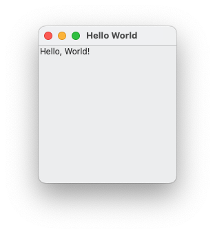
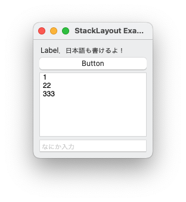
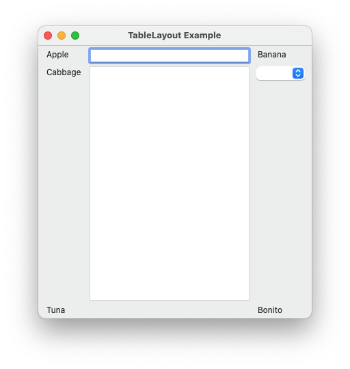
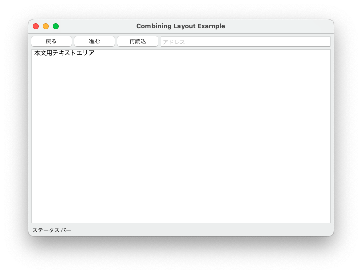
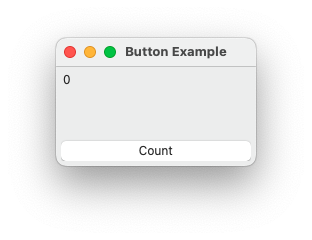

オープンソースかつクロスプラットフォームのGUIライブラリEto.Formsを用いて，GUIプログラムを作成してみよう．この演習をすすめる前には環境構築2を完了させておこう．
Formクラス
いわゆるウィンドウを表すクラス．
Eto.Formsのテンプレートからデフォルト設定で生成されるコードは，以下のように，
- Formの派生クラスを定義するコードと，
- そのフォームからなるGUIアプリケーションを実行するコード（バックエンド毎．デフォルトだとMac，Wpf，GTKの3つ）
の二つの部分からなっている．
// PROJECTNAME/MainForm.cs
using System;
using Eto.Forms;
using Eto.Drawing;
namespace PROJECTNAME
{
// partialはMainFormの定義を分割可能にする．ここでは不要
// publicは必要．コンパイル単位が異なるため．
public partial class MainForm : Form
{
public MainForm()
{
// 作成される Form にいろいろなGUI部品を追加
}
}
}// PROJECTNAME.BACKEND/Program.cs
using System;
using Eto.Forms;
namespace PROJECTNAME.BACKEND
{
class Program
{
[STAThread] // 属性．COMのスレッドモデルをsingle-threaded apartmentに指定する…らしい．
// この public も必須ではない
public static void Main(string[] args)
{
// Macの場合
new Application(Eto.Platforms.Mac64).Run(new MainForm());
// Wpfの場合
new Application(Eto.Platforms.Wpf).Run(new MainForm());
// GTKの場合
new Application(Eto.Platforms.Gtk).Run(new MainForm());
}
}
}本演習では後者はの部分は変更せずに，前者のMainForm.csを拡張することで進めていく．すなわち，作成するFormに様々なGUI部品（コントロールと呼ばれる）を追加することになる．
その際は以下のプロパティを適切に設定することが有用であろう．
public string Title |
ウィンドウのタイトルを表すプロパティ |
public Control Content |
ウィンドウの中身となるGUI部品 |
public Size ClientSize |
中身のサイズ（ボーダーやタイトルバーを除いたサイズ） |
またテンプレート生成されたコードでは，以下のプロパティが用いられている．
public MenuBar Menu |
メニューバーを表す（Macだとウィンドウの中じゃなくて上の部分） |
public ToolBar ToolBar |
ツールバーを表す |
では，まずはTitle，Content，ClientSizeのみを使うように，MainForm.csで定義されているMainFormクラスのコンストラクタを以下のように変更してみよう．
public MainForm()
{
Title = "Hello World";
ClientSize = new Size(200, 200);
// オブジェクト初期化子を利用
Content = new Label() { Text = "Hello, World!" };
}以下のようなウィンドウが表示されたことだろう（以下はMacにおける例）

ところで，Macにおいては左上の「閉じる」ボタンを押してもアプリケーションが終了しないことに気付いたかもしれない．これはいささか不便である．幸いなことに空のMenuBarをMenuに代入すると Mac 環境ではいろいろなアイテムを Eto.Forms が追加してくれる．
public MainForm()
{
Title = "Hello World";
ClientSize = new Size(200, 200);
Content = new Label() { Text = "Hello, World!" };
// 「空」のメニューバーを追加する．
// すると，Mac環境においてはMenuプロパティのsetterがいろいろなアイテムを追加してくれる．
Menu = new MenuBar();
}これで，Command + Q等の標準的な操作でアプリケーションを終了することができるようになる（WpfやGtkだと「閉じる」ボタンで，終了する）．
オブジェクト初期化子があれば，引数なしのコンストラクタの括弧は省略できる．たとえば，上のContent =の行は
Content = new Label { Text = "Hello, World!" }; とも書ける．
コントロール（GUI部品）
さて，上記にあった Label は単に与えられたテキストを表示するというコントロール（GUI部品）である．たとえば，よく使うコントロールは Labelを含め以下のようなものであろう．
| コントロール（を表すクラス） | 説明 |
|---|---|
Label |
テキストを画面に表示する |
Button |
その名の通りボタン |
TextBox |
一行のテキストを入力できる欄 |
TextArea |
複数行のテキストを入力できる欄．スクロールバー付き |
Eto.Formsでは他にも様々なコントロールが提供されている．たとえば以下など．
| コントロール（を表すクラス） | 説明 |
|---|---|
CheckBox |
ラベル付きのチェックボックス |
RadioButton |
ラジオボタン（一個 on にすると他が off になるボタン） |
DropDown |
ドロップダウンリスト |
ImageView |
画像の表示 |
Slider |
「つまみ」を縦か横に動かして値を決める部品 |
コンテナ（コントロールを保持するもの）
コントロールを複数個（1個のみのときもある）保持するコントロールはコンテナと呼ばれる．
スクロールを可能にするScrollable，タブでコントロールを切り替えられるTabControl，二つのコントロールを区切り線で分けるSplitterや次項で説明するレイアウトがある．また，Formもコントロールを一個保持するようなコンテナの一つである．
レイアウト
レイアウトはコンテナの一種であり，コントロールを適切な位置に並べてくれる． Eto.Formsの提供する代表的なレイアウトに以下のようなものがある．
StackLayout |
横または縦の一方向にコントロールを並べるレイアウト |
TableLayout |
表のセルのようにコントロールを配置するレイアウト |
DynamicLayout |
縦と横を切り替えつつコントロールを並べるレイアウト |
ここでは，StackLayoutとTableLayoutについて紹介する．
StackLayoutの例
public MainForm()
{
Title = "StackLayout Example";
ClientSize = new Size(200, 200);
Menu = new MenuBar();
StackLayout stackLayout = new StackLayout();
// stackLayout自体と「中身」との間のスペース
stackLayout.Padding = 10;
// stackLayoutの各コンポーネント間のスペース
stackLayout.Spacing = 5;
// コンポーネントの配置の方向を指定（Orientation.Horizontalなら横）．
// デフォルトが縦なので，この文は実は不要
stackLayout.Orientation = Orientation.Vertical;
// 横方向の配置位置．HorizontalAlignment.Stretchは左も右もいっぱいまで伸ばす．
stackLayout.HorizontalContentAlignment = HorizontalAlignment.Stretch;
stackLayout.Items.Add(new Label { Text = "Label．日本語も書けるよ！" });
stackLayout.Items.Add(new Button { Text = "Button" });
// 縦に伸べるTextArea．伸びないようにするには二つ目の引数をfalseにする．
stackLayout.Items.Add(new StackLayoutItem(new TextArea { Text = "1\n22\n333" }, true));
stackLayout.Items.Add(new TextBox { PlaceholderText = "なにか入力" });
Content = stackLayout;
}上記の実行例（Macの場合）

上のプログラムでは下記のプロパティを使った．
| プロパティ名 | 大雑把な説明 |
|---|---|
Padding |
StackLayout自体とその中身の間のスペース |
Spacing |
StackLayoutに含まれる各コントロール間のスペース（int型） |
Orientation |
StackLayoutの方向．Orientation.VerticalかOrientation.Horizontalか． |
|
|
|
上の縦版． |
Items |
保持するコントロールのコレクション．読み出し専用（代入できないという意味） |
正確にはItemsはStackLayoutItemを保持するコレクションである．C#では暗黙の型変換をユーザが定義することができ，各コントロールの基底クラスであるControlからStackLayoutItemへの型変換が定義されているため，コントロールを直接ItemsへAddメソッドを使って追加することができる．また，StackLayoutItemのコンストラクタStackLayoutItem(Control, bool)を使うことにより，そのコントロールがOrientationに沿って伸長するかどうかを指定できる．
Note
上記はオブジェクト初期化子とコレクション初期化子（new List<int> {1,2,3,4}の{1,2,3,4}の部分）を使うことで，以下のようにより簡潔に記述できる．
public MainForm()
{
Title = "StackLayout Example";
ClientSize = new Size(200, 200);
Menu = new MenuBar();
// オブジェクト初期化子を使った方法
Content = new StackLayout
{
Padding = 10,
Spacing = 5,
Orientation = Orientation.Vertical,
HorizontalContentAlignment = HorizontalAlignment.Stretch,
// Items は read-only プロパティだが，オブジェクト初期化子中に
// Items = {a, b, c, d} と書くことで Items.Add(a), Items.Add(b), Items.Add(c), Items.Add(d)
// をオブジェクト生成後に呼ぶことができる
Items = {
new Label { Text = "Label. 日本語も書けるよ！" },
new Button { Text = "Button" },
new StackLayoutItem ( new TextArea { Text = "1\n22\n333" }, true ),
new TextBox { PlaceholderText = "なにか入力" }
}
};
}練習問題
上記のプログラムを少し改変してみて挙動の変化を確認してみよう．たとえば，以下等をしてみるとよい．
Orientationを変えてみる- 紹介されたが上の例では使われなかったプロパティを使ってみる
PaddingやSpacingを変えてみる- 同じコントロールを複数追加してみる
StackLayoutItemコンストラクタの第二引数にfalseを渡してみる- あるいは，コントロール
cを追加する際にAdd(c)をAdd(new StackLayoutItem (c, true)としてみる
TableLayoutの例
TableLayoutは Eto.Forms の提供するレイアウトのうち基本となるものであり（StackLayoutやDynamicLayoutも内部でTableLayoutを使用している），表組みのようなレイアウトを実現する．
public MainForm()
{
Title = "TableLayout Example";
ClientSize = new Size(400, 400);
Menu = new MenuBar();
TableLayout tableLayout = new TableLayout();
// 横と縦のパディングを指定（4引数バージョンもある）
tableLayout.Padding = new Padding(10, 5);
// tableLayoutのSpacingは横と縦の両方を指定
tableLayout.Spacing = new Size(10, 5);
tableLayout.Rows.Add(
new TableRow(new Label { Text = "Apple" },
// 横方向に伸長するセル
new TableCell(new TextBox { }, true),
new Label { Text = "Banana" }));
tableLayout.Rows.Add(
new TableRow(new Label { Text = "Cabbage" },
new TextArea { },
// TableLayout.AutoSized は中の要素が伸長しないセルを作る（このセルは伸長する行に置かれている）
TableLayout.AutoSized(new DropDown { Items = { "Item 1", "Item 2", "Item 3" } }))
// この行は伸長する
{ ScaleHeight = true });
tableLayout.Rows.Add(
new TableRow(new Label { Text = "Tuna" },
// null は伸長する何もないセル
null,
new Label { Text = "Bonito" }));
// 以下をアンコメントしたらどうなる？
// tableLayout.Rows.Add(null); // 伸長する何もない行の追加
Content = tableLayout;
}上記の実行例（Macの場合）

上のプログラムでは下記のTableLayoutのプロパティを使った．
| プロパティ名 | 大雑把な説明 |
|---|---|
Padding |
TableLayout自体とその中身の間のスペース |
Spacing |
TableLayoutに含まれる各コントロール間のスペース（Size型） |
Rows |
各要素がTableRowであるコレクション（読み出し専用） |
また，TableRowの以下のコンストラクタおよびプロパティを使用した．
| メンバ名 | 大雑把な説明 |
|---|---|
TableRow(TableCell c1, ..., TableCell cn) |
セル c1, ... , cn を含んだ行を作るコンストラクタ |
ScaleHeight |
行が伸長可能かどうか |
StackLayoutItemのときと同様にControlからTableCellへの暗黙の型変換が定義されている．そのため，それを利用することで，Control型のnew Label { Text = "Apple" }等をそのままTableRowコンストラクタの引数に渡すことができる．セルの横幅を伸長可能にしたい場合は上記のようにコンストラクタTableCell(Control, bool)を使用する．
TableLayout.AutoSized というstatic メソッドは伸長するセルの中に伸長したくないコントロールを配置するのに使う．
練習問題
上記のプログラムを少し改変してみて挙動の変化を確認してみよう．たとえば，以下等をしてみるとよい．
- 「以下をアンコメントしたらどうなる？」に従ってみる
TableLayout.AutoSizedを使わないでみる．あるいはTextAreaを追加する際にAutoSizedを使ってみるPaddingやSpacingを変えてみる- 同じコントロールを複数追加してみる
StackLayoutのときのように，オブジェクト初期化子をできるだけ活用する形にプログラムを変更してみる
レイアウトを組み合せる
レイアウトを組み合わせることで，複雑なレイアウトを実現することができる．
たとえば
(Button1) (Button2) (Button3) [TextBox ]
+----------------------------------------------------------+
| TextArea |
| |
| |
| |
| |
+----------------------------------------------------------+
Labelという配置は，StackLayoutを組み合わせることにより実現可能である．
public MainForm()
{
Title = "Combining Layout Example";
ClientSize = new Size(600, 400);
Menu = new MenuBar();
StackLayout headerPart = new StackLayout();
headerPart.Orientation = Orientation.Horizontal;
headerPart.Spacing = 5;
headerPart.Items.Add(new Button { Text = "戻る" });
headerPart.Items.Add(new Button { Text = "進む" });
headerPart.Items.Add(new Button { Text = "再読込" });
headerPart.Items.Add(new StackLayoutItem(new TextBox { PlaceholderText = "アドレス" }, true));
StackLayout mainPart = new StackLayout();
mainPart.Spacing = 5;
mainPart.Padding = 5;
mainPart.HorizontalContentAlignment = HorizontalAlignment.Stretch;
mainPart.Items.Add(headerPart);
mainPart.Items.Add(new StackLayoutItem(new TextArea { Text = "本文用テキストエリア" }, true));
mainPart.Items.Add(new Label { Text = "ステータスバー" });
Content = mainPart;
}上記の実行例（Macの場合）

ボタンを押したときの動作
さて，これまではGUI部品を配置するだけで，GUI部品がなにか面白いことをすることはなかった．ここではボタンを押したときの動作を実装してみよう．
まずは非常に単純なアプリケーションを作ってみる．このアプリケーションの画面には一つのボタンと一つのラベルがあるのみである．ボタンを押すと，ラベルにボタンを押した回数が表示されるというものである．各コントロールの配置は適当でよい．
コントロールの配置だけを考えれば以下のようなプログラム（MainFormコンストラクタのみ抜粋）が書けるだろう．
public MainForm()
{
Title = "Button Example";
ClientSize = new Size(200, 100);
Menu = new MenuBar();
Button countButton = new Button { Text = "Count" };
Label countLabel = new Label { Text = "0" };
StackLayout stackLayout = new StackLayout();
stackLayout.Padding = 5;
stackLayout.HorizontalContentAlignment = HorizontalAlignment.Stretch;
stackLayout.Items.Add(new StackLayoutItem(countLabel, true));
stackLayout.Items.Add(countButton);
Content = stackLayout;
}上記の実行例（Macの場合）

イベントハンドラの登録
ボタンbuttonを押したときに，なにかをさせたい場合は以下のようにbutton.Clickイベントにハンドラを登録すればよい．
// クリックされたときに YOUR_METHOD(イベント発生させたオブジェクト，EventArgs型のオブジェクト) が呼び出される
button.Click += YOUR_METHOD; C#ではクラスやオブジェクトはイベント（のハンドラを格納するもの）を持つことができる．実際にClickは
// EventHandlerについては https://docs.microsoft.com/dotnet/api/system.eventhandler-1 参照
public event EventHandler<EventArgs> Click; というButtonの（インスタンス）メンバとして宣言されている．
イベントはフィールドやプロパティとは異なり，その当該のクラスからしか発生させる（イベントハンドラを呼び出す）ことができない（なので，派生クラスからイベントを発生させたい場合は，基底クラスのほうでイベント発生をラップする protected ないし public なメソッドを用意する必要がある）．ただし，イベントはそのクラスの外でも購読（イベントハンドラを登録する）ことができる．上記の+=はbutton.Clickというイベントを購読する（あるいは"button.Click"というイベントに対するイベントハンドラを登録する）ための構文である．また，イベントの購読解除も行うことができ，対応する構文は-=である．
さて，上記のYOUR_METHODの部分はstatic メソッドでもそうでない通常のメソッド（インスタンスメソッド）でもよいが，今回の目的でもっとも簡潔なのは以下に紹介するラムダ式を使う方法である．
匿名関数（ラムダ式）
匿名関数を作成するため式（ラムダ式）の基本的な構文は以下である．
() => { ... }
たとえば，上記のボタンの例だと
int cnt = 0;
// sとeは無名関数のパラメータ．型はオプショナル
countButton.Click += (s, e) =>
{
// あたり前に感じるかもしれないが，無名関数の中身の部分では，
// その外側で定義された変数にもアクセスできる．
cnt++;
countLabel.Text = cnt.ToString();
};のように書く．MainFormコンストラクタ全体は以下のようになる．
public MainForm()
{
Title = "Button Example";
ClientSize = new Size(200, 100);
Menu = new MenuBar();
Button countButton = new Button { Text = "Count" };
Label countLabel = new Label { Text = "0" };
int cnt = 0;
countButton.Click += (s, e) =>
{
cnt++;
countLabel.Text = cnt.ToString();
};
StackLayout stackLayout = new StackLayout();
stackLayout.Padding = 5;
stackLayout.HorizontalContentAlignment = HorizontalAlignment.Stretch;
stackLayout.Items.Add(new StackLayoutItem(countLabel, true));
stackLayout.Items.Add(countButton);
Content = stackLayout;
}Note
インスタンスメソッドを使った場合は，たとえば，MainFormのインスタンスを用いる場合は
public class MainForm : Form
{
private int cnt = 0;
private Label countLabel;
private void countUp(object sender, EventArgs e)
{
cnt++;
countLabel.Text = cnt.ToString();
}
public MainForm()
{
Title = "Button Example";
ClientSize = new Size(200, 100);
Menu = new MenuBar();
Button countButton = new Button { Text = "Count" };
countLabel = new Label { Text = "0" };
countButton.Click += this.countUp;
StackLayout stackLayout = new StackLayout();
stackLayout.Padding = 5;
stackLayout.HorizontalContentAlignment = HorizontalAlignment.Stretch;
stackLayout.Items.Add(new StackLayoutItem(countLabel, true));
stackLayout.Items.Add(countButton);
Content = stackLayout;
}
}となり，あるいはカウントやラベルの情報を格納するためだけのクラスを作る場合は
public class MainForm : Form
{
private class countUpClass
{
private int count;
private Label label;
public countUpClass(int c, Label l)
{
count = c; label = l;
}
public void countUp(object sender, EventArgs e)
{
count++;
label.Text = count.ToString();
}
}
public MainForm()
{
Title = "Button Example";
ClientSize = new Size(200, 100);
Menu = new MenuBar();
Button countButton = new Button { Text = "Count" };
Label countLabel = new Label { Text = "0" };
countButton.Click += new countUpClass(0, countLabel).countUp;
StackLayout stackLayout = new StackLayout();
stackLayout.Padding = 5;
stackLayout.HorizontalContentAlignment = HorizontalAlignment.Stretch;
stackLayout.Items.Add(new StackLayoutItem(countLabel, true));
stackLayout.Items.Add(countButton);
Content = stackLayout;
}
}のようになる．